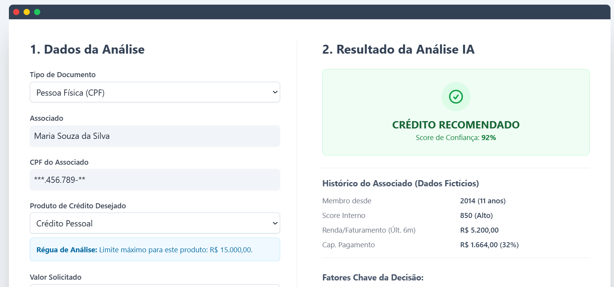

Inteligência artificial
Synapse
Plataforma de análise de crédito para cooperativas, premiada no programa de inovação Go!Coop.
Sobre o projeto
A plataforma reúne os dados da operação e apresenta uma recomendação para apoiar a decisão de crédito da cooperativa.
Ver tela em tamanho real ↗